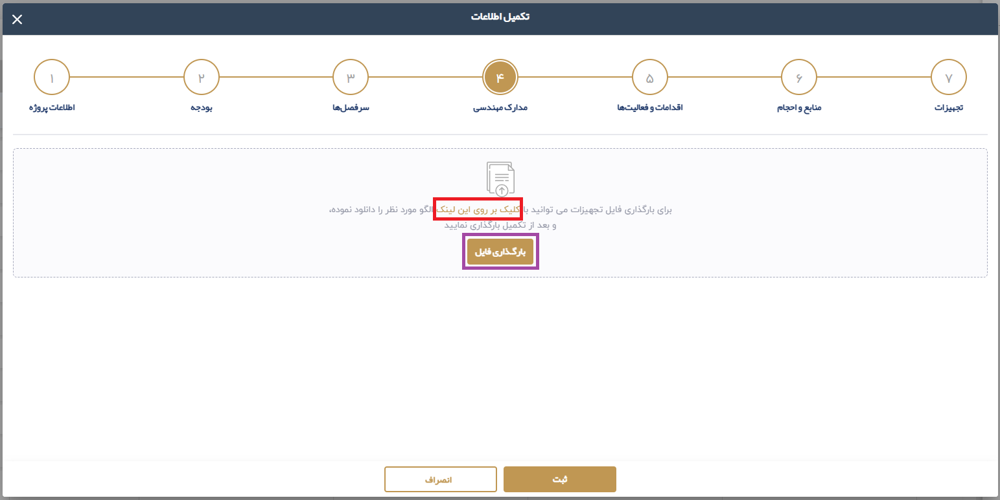

2.1.4. بارگزاري مدارک مهندسي
با استفاده از لینک موجود در این بخش فایل اکسل الگوی مدارک مهندسی را دانلود می نماییم سپس اطلاعات مربوطه را در این فایل درج می نماییم و در نهایت با استفاده از دکمه بارگذاری فایل اکسل مربوطه را انتخاب می نماییم در نهایت کلید ثبت را انتخاب می نمایید.
